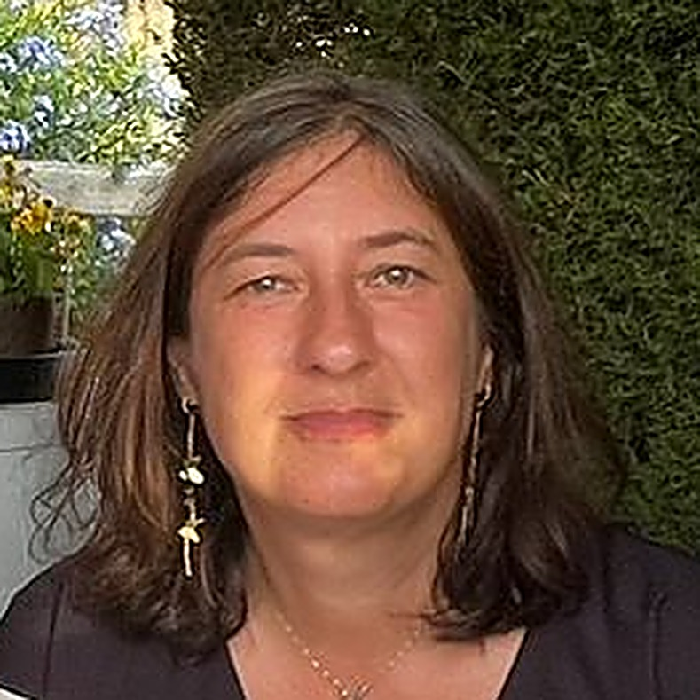

Institutrice, maman, et Thérapeute Co-créative — un parcours de vie devenu un chemin d'accompagnement pour les enfants, les ados et leurs familles.

Institutrice de formation, je travaille depuis 20 ans dans une école d'enseignement spécialisé. Maman d'un ado et en couple depuis 21 ans, je sais aussi ce que la vie peut mettre sur le chemin.
Comme beaucoup, je suis passée par de nombreuses épreuves — pertes, maladie, coups durs — et il m'a fallu du temps pour retrouver la lumière face à ce qui ressemblait à une véritable chaîne de montagnes. Mais rien n'est dû au hasard : à un moment, un autre chemin s'est dessiné, et j'ai choisi de l'entreprendre. Ce chemin, parcouru depuis des années, a donné naissance à LudoThéraCoach — pour aider à mon tour celles et ceux qui en ressentent le besoin, pour un petit bout de chemin ou plus, selon les besoins de chacun.
J'ai suivi une formation de 4 ans en tant que Thérapeute Co-créative avec Dominique de Thier. Passionnée de développement personnel, je continue aujourd'hui encore à me former à diverses méthodes.
Une autre écoute, une autre manière de voir les choses, renaître à la vie, apprendre encore et toujours — voilà mon chemin, que je serais heureuse de partager avec vous.
Quand je ne suis pas à l'école, je suis disponible sur rendez-vous pour des consultations — enfants, ados, adultes, parents en difficulté, ou en rendez-vous parents/enfants. Toute personne qui a besoin d'un petit coup de pouce pour avancer sur son chemin est la bienvenue.
Avec les enfants et les ados, mes portes d'entrée sont le jeu, la créativité — tout ce qui permet d'entrer en relation et de (re)construire le dialogue.
Je me rends également dans les écoles, à la demande des parents et avec l'accord de la direction, pour essayer de comprendre ce qui pose problème et tenter, ensemble, de trouver des solutions.
Demander de l'aide, c'est déjà un pas…
Un accueil chaleureux, où l'enfant peut déposer ce qu'il vit sans crainte d'être jugé.
Les émotions se comprennent aussi en jouant : c'est le cœur de la démarche LudoThéraCoach.
Pas de recette toute faite : chaque parcours est ajusté à l'enfant et à sa famille.